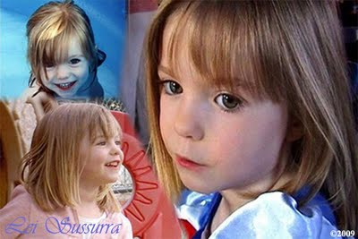

Karr Contends Madeleine McCann is Alive
In chilling descriptions, an experienced Karr provides reasons why McCann's abductors might have spared her life.
INTERNATIONAL (Lei Sussurra) September 10, 2009 -- A judge in Portugal has banned a book titled "The Truth of The Lie" wherein writer Goncalo Amaral efforts to convince readers that abducted child Madeleine McCann is dead. Many consider his conjecture to be a hindrance in solving a missing child case as opposed to a child murder case. John Mark Karr has said since her disappearance that McCann is alive based on what he refers to as his "past experience."
"I can depend on my own background and international experience to come to a conclusion. I believe she’s alive for several reasons. I'm also not convinced that she was taken by a pedophile," Karr stated.
Lei Sussurra has excerpted his theory from a rare radio talk show format entitled "Deeper". In the November 2008 transcript, Karr expresses his belief that McCann was taken by crafty abductors with experience moving about Europe, undetected.
"I believe she is and will remain in mainland Europe due my past experience moving through those countries over a period of several years. In the event that the kidnapper or kidnappers would need to change locations frequently to evade law enforcement, they could travel from country to country without having to present a passport. This was my experience for the two years I lived in various parts of Europe," Karr expressed.
In chilling descriptions, an experienced Karr provides reasons why McCann's abductors might have spared her life stating, "I think she’s still alive because, quite simply, she was worth keeping alive. As harsh as that may sound, one must think as the abductor would think to understand what might've likely happened to her."
Karr further explained to Lei Sussurra that he believes a family wanting a child of their own might have paid an abductor to have her. Karr explained how easily McCann could integrate into a new family.
"Madeleine was three when she was taken. She was taken young enough to rearrange her memory processes. At just under four, it’d be easy to reprogram her thoughts of her past family to that of another family or even another individual. Her memory of her parents and siblings at the time of her abduction could easily fade with the proper deprogramming," Karr explained.
Karr further explained why he thinks McCann, if alive, has not been found.
"Unless she’s recognized by her physical attributes, there’s no way she can be identified. The abductors can produce a bogus birth certificate to obtain a passport. Passports are the premiere identity document in Europe. In my past experience working with children in Europe, they all had passports acquired by their parents," Karr explained.
Though Karr has been considered by some a threat to society, he went on to share his own ideas on methods of prevention.
"This brings us to a measure that might be well considered in the future – mandatory fingerprinting of children with a database in place. In other words, when a parent makes an attempt to order an identity document like a passport, the child’s fingerprints have to be provided and compared to an international database. It could also be required to check fingerprints of children registering for school. It might sound extreme but it would tremendously help in the search for missing children who otherwise go right under the wire," stated Karr.
Karr abducted a twelve year old girl in America in 1983, taking her across state lines which would have resulted in the involvement of the FBI and considered a federal case had it been legally pursued. SWAT teams swarmed Karr's Atlanta home just moments after he left with the twelve year old girl to return her to her parents. Karr rendezvoused with a fifteen year old girl in 1988 prior to an elopement with her when she was sixteen. Karr was arrested on two counts of first degree murder and two counts of kidnapping of six year old JonBenet Ramsey in 2006.
Lei Sussurra
Copyright 2009
All Rights Reserved